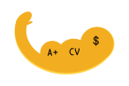
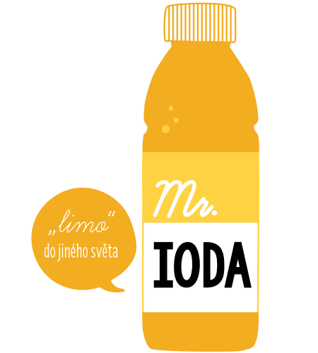
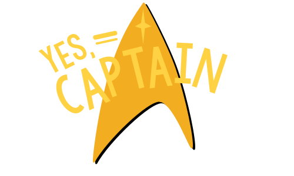
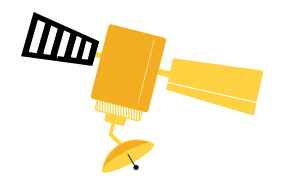

Portál SPOLUPRÁCE S PRŮMYSLEM (
SSP
) je komplexním
systémem - sítí propojující akademický svět s komerční sférou pomocí
inteligentní webové
aplikace.
SSP =Studuj S Praxí =
Studenti +
Studijní zázemí (univerzity) +
Průmysloví partneři
(Podniky)
KOLEM ČEHO SE TO CELÉ TOČÍ?
Zadání (challenge) >>>
(spolu)práce na projektu >>>
reálné výstupy/řešení/inovace
Průmyslový partner v(y)stupuje jako zadavatel projektů pro univerzitní studenty. Vypsané
úlohy jsou pak – po schválení pedagogem – řešeny vybraným studentem/týmem v rámci studovaných
kurzů.
S/ZMěnárna
SSP se tak stává místem pro aktivní budování a rozvoj
spolupráce, prostorem pro
reciproční směnu a efektivní implementaci žádoucích změn.
STUDENTI > PARTNEŘI: nápady, skills, talent, nová
perspektiva, řešení
PARTNEŘI > STUDENTI: příležitost, praxe, finanční
ohodnocení
PARTNEŘI > UNIVERZITA: investice do inovací a
výzkumu,
zpětná vazba z
komerční sféry
UNIVERZITA > PARTNEŘI: inovační zázemí, nové
technologie, teoretické
poznatky, (data)báze nadšenců z řad studentů i akademiků, expertní služby/rady
SSP > systematizace (definované
postupy, metodologie, know-how), právní
ošetření, jednoduchost
PROČ SE DRŽET PŘI ZEMI?
SSP reprezentuje unikátní koncept, jenž je svým rozsahem a stupněm integrace s akademickým prostředím
PRVNÍ SVÉHO DRUHU! Inovativní je rovněž používání chytrých algoritmů, jež zajišťují, že na zadané
projekty jsou doporučováni právě ti studenti, kteří nejvíce odpovídají specifikovaným požadavkům.
Posuzování vhodnosti kandidáta probíhá na základě tzv. garantovaného hodnocení, jež je založeno na
výpočtu schopností studenta (ovlivněno např. studijními výsledky v již absolvovaných předmětech). Tento
prvek zároveň motivuje studenta k vylepšení jeho hvězdného profilu a tím i daných dovedností (=
gamifikace).
Student
Space, Man!
Ready na raketový start? Portál SSP představuje nejefektivnější cestu jak propojit tvé studium s
praxí,
true story! Jako nadějný student se ani nenaděješ… Budeš moci co-pilotovat reálný projekt
úspěšných
firem - získáš tak prostor pro aplikaci získaných teoretických poznatků i posílení svých skills.
Co
víc?
Výstupy tvé práce ti mohou být uznány v rámci tebou studovaných předmětů. Nemine tě ani hvězdné
hodnocení. Strike!
ArmStrong!!!
Ukaž v čem tkví tvá supersíla a proFITuj!
Benefity spolupráce s průmyslem - ruku na to:
Kredity
Praxe/zkušenosti, kontakty, feedback, CV tunning/
Finanční odMĚNA

Tvá mise nemusí být jen otázkou měsíců – práce na semestrálním projektu může znamenat začátek dlouhodobé
spolupráce s některým z partnerů a udat tak směr tvé budoucí (KARI)éře. Stojí za to si studium okořenit
prací na zajímavých projektech… nemyslíš?
Univerzita
Across the UNIverse
Portál SSP je koncipován tak, aby (ko)operoval napříč univerzitami. Chcete se přidat? “
Nothing’s
It´s [SSP] gonna change my world.” - Slyšte hudbu budoucnosti!
ALMA - the Mothership
Jsme na jedné lodi – všichni si přejeme, aby vaši studenti byly SPO(C)KY! Proplouvat světem
akademických formulí je fajn, ale co zařadit do akademického (raketo)plánu trochu reálného
drivu? Šup do komerční (atmo)sféry.
Vytvořte alianci se SSP... Proč?
posílíte tak vztahy se stávajícími partnery
získáte nové partnery/investory pro spolupráci s vaším univerzitním pracovištěm
využívání Portálu znamená krok směrem k realizaci smluvního výzkumu (nové oblasti, data) i aplikaci
již výsledných teoretických poznatků do praxe
dostane se vám zpětné vazby od průmyslových partnerů – aktualizací obsahové náplně předmětů tak lze
reagovat na reálné potřeby trhu
vaši absolventi se budou moci lépe uplatnit na trhu práce
prakticky orientované předměty jsou atraktivnější pro potenciální uchazeče o studium > zapojení do
Portálu SSP tak představuje konkurenční výhodu v boji univerzit o mladé talenty
Učitel
Nebuďte hvězdou akademické smrti - nevychovávejte klony bez praktického uplatnění se stále
stejnými semestrálkami do šuplíku. Probuďte a rozvíjejte ve studentech jejich individuální
talent. Poraďte jim, povzbuďte je a dodejte jim SÍLU k řešení zadání od průmyslových partnerů…

V rámci SSP pedagog schvaluje vypsané úlohy do předmětu, validuje jejich obsahovou relevanci k
probíranému učivu, specifikuje parametry a požadované výstupy pro splnění daného zadání i
samotného kurzu. Doprovází tak své žáky na jejich cestě ke správnému řešení.
Co za to?
zajímavější práce - … se studenty (motivace, větší aktivita a zapojení), … na zadáních
aktuálnost obsahové náplně předmětu (zpětná vazba od průmyslových partnerů)
aplikace učiva do praxe (efektivita) – zužitkujte (svá) DATA!
praktická orientace kurzu > zvýšení jeho atraktivity > zvýšení atraktivity kurzu – prestiž
předmětu mezi studenty, větší zájem
finanční ohodnocení
budování vztahu s průmyslovými partnery
ZAPERLÍTE!
Univerzitní expert
Každý projekt potřebuje svého kapitána. Zatímco průmyslový partner vystupuje v rámci SSP jako
zadavatel úloh, velení nad samotným projektem může delegovat na univerzitního experta.
Expert jako velitel expedice
VYMÝŠLÍ MISI
= může pomoci průmyslovým partnerům definovat/specifikovat vybrané úlohy,
stejně jako zhodnotit vhodnost a využitelnost daných zadání v rámci jednotlivých studijních
předmětů
REKRUTUJE HVĚZDNOU POSÁDKU = pomáhá průmyslníkům
najít ty nejvhodnější kandidáty pro
spolupráci z řad talentovaných studentů
URČUJE KURZ = koordinuje a naviguje vzniklý tým

Staňte se expertem pro SSP a…
budujte vztahy s průmyslovými partnery
setkávejte se s mladými talenty
spolupracujte na zajímavých zadáních/projektech
podpořte rozvoj svého univerzitního pracoviště
získejte finanční ohodnocení
Průmyslový partner
(Dobro)Družně
Vydejte se probádat svět nových inovací, navazujte kontakty s akademickými
kapacitami a univerzitními experty, vysondujte talentované studenty pro spolupráci! Jak?
Vybudujte si svou základnu na SSP a kolonizujte UNIverse!

Proč se družit se SSP?
Jako průmyslový partner získáte možnost:
využívat zázemí univerzity a její inovační platformy (nové poznatky, vývoj + testování +
zavedení prototypů)
(dlouhodobě) spolupracovat s mladými talenty (= nová perspektiva, nápady, …)
formovat profil studentů (získat přehled o jejich dovednostech, ovlivňovat obsahovou náplň
kurzů, …)
vychovat si budoucího pracovníka/kolegu
využít zkušeností univerzitních expertů* a pedagogů při řešení zadaných úloh
šetřit lidské zdroje (SSP nabízí služby jako vedení týmu či řízené získávání talentů)